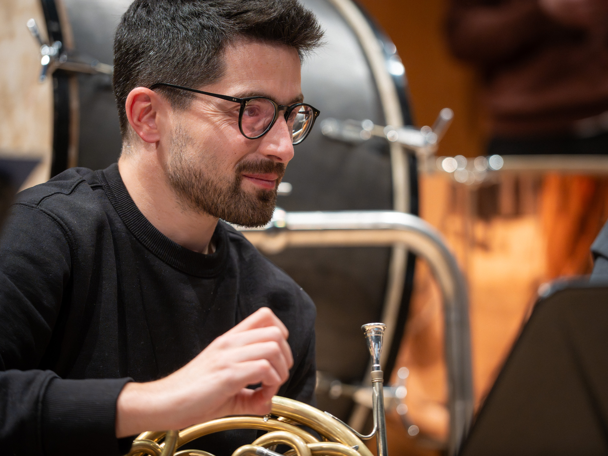

Biografía
Soy trompa principal de la Orquesta Sinfónica de Galicia desde 2020, aunque mi vínculo con esta orquesta viene de antes. Mi formación me ha llevado por todo el mundo y he tenido la fortuna de compartir atril con orquestas y músicos que admiro profundamente. Sigo aprendiendo cada día, tanto sobre el escenario como en la docencia, que es otra de mis grandes pasiones. Actualmente toco una trompa Klaus Fehr modelo 1p.
Trompa principal de la Orquesta Sinfónica de Galicia desde el año 2020 y principal asistente con anterioridad desde el 2015. Previamente ha sido miembro de la Royal Stockholm Philharmonic Orchestra en el puesto de trompa tutti. En los últimos años colabora como trompa principal con orquestas de primer nivel internacional como la Orchestra Mozart de Bologna, Mahler Chamber Orchestra, BBC Scottish Symphony Orchestra o The Cleveland Orchestra, así como en otras formaciones nacionales como la Orquesta Sinfónica de Castilla y León, Orquesta de Extremadura o la Orquesta Nacional de España.
Licenciado con matrícula de honor en el Conservatorio Superior de Música de A Coruña y diplomado en Master of Arts, por la Universidad de Londres, en la Royal Academy of Music gracias a una beca de la ABRSM. Completa sus estudios en la Escuela Superior de Música Reina Sofía de Madrid con una beca de la Fundación Albéniz, siendo condecorado como el alumno más sobresaliente de la cátedra de trompa en el año 2013. Su primera etapa de formación la realiza en el Conservatorio Municipal de Música de Viveiro.
Son importantes en su formación los maestros Rodolfo Epelde y Radovan Vlatkovic en Madrid, Richard Watkins y Michael Thompson en Londres, y fundamentales en sus inicios como trompista, Delio Represas y Benjamín Iglesias.
Ha sido becado, también, por la Fundación JONDE-BBVA para recibir lecciones privadas de la prestigiosa trompista noruega Fröydis Ree Wekre.
Goza de una importante educación orquestal siendo miembro de la EUYO y de la GMJO, participando en varias giras por Europa y Norte América. Ha formado parte, también, de la JONDE y de la Orquesta Joven de la Sinfónica de Galicia, donde inicia sus estudios orquestales de la mano de los profesores José Vicente Castelló, David Bushnell y Mike Garza.
En el campo de la música de cámara participa en importantes festivales internacionales, como el Encuentro de Música y Academia de Santander, el MMCJ en Yokohama o la Mahler Academy en Bolzano.
Ha sido premiado en diferentes concursos a nivel internacional, pudiendo destacar el primer premio y premio del público en la sétima edición del International Wind Competition del Conservatorio de Moscú, el segundo premio en el Chieri International Competition 2015 o el segundo premio ex aequo y premio del público en el International Instrumental Competition Markneukirchen de 2016. Así mismo, ha sido semifinalista en el 65th ARD Music Competition de Munich, recibiendo el premio Bärenreiter Urtext Prize.
En el campo de la docencia, colabora en numerosos festivales y cursos impartiendo clases magistrales, entre los que pueden destacar el Hércules Brass de Celanova o el Festival Numskull de Caudete. También ejerce como profesor en la Orquesta Joven de la Sinfónica de Galicia, preparando a las nuevas generaciones de viento metal.
Como solista, ha tenido la oportunidad de interpretar el Concierto nº 1 op. 11 de Richard Strauss con la Orquesta Joven de la Sinfónica de Galicia, o el Concierto nº 4 K.495 de W. A. Mozart con la Orquesta de Caserta en el festival Autunno Musicale de 2017 en Italia. También ha tocado, junto a su compañero David Bushnell y la OSG, el concierto para dos trompas en Mi bemol mayor de A. Rosetti (atribuido a J. Haydn).
En junio de 2022, estrenó, con la OSG, el concierto para trompa y orquesta de cuerdas del compositor Carlos López García-Picos.
Recientemente ha tenido la oportunidad de tocar la Serenata op. 31 de Benjamin Britten para tenor, trompa y orquesta de cuerdas, junto al afamado tenor británico Ian Bostridge y la Orquesta Sinfónica de Galicia, dirigidos por Roberto González Monjas.